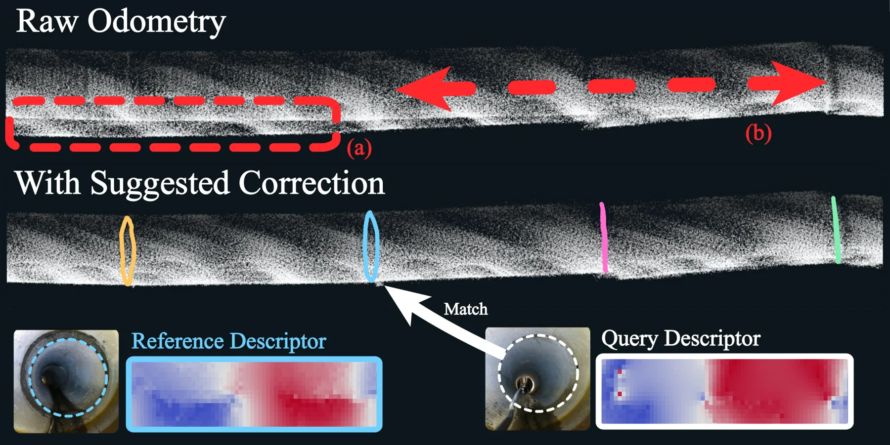
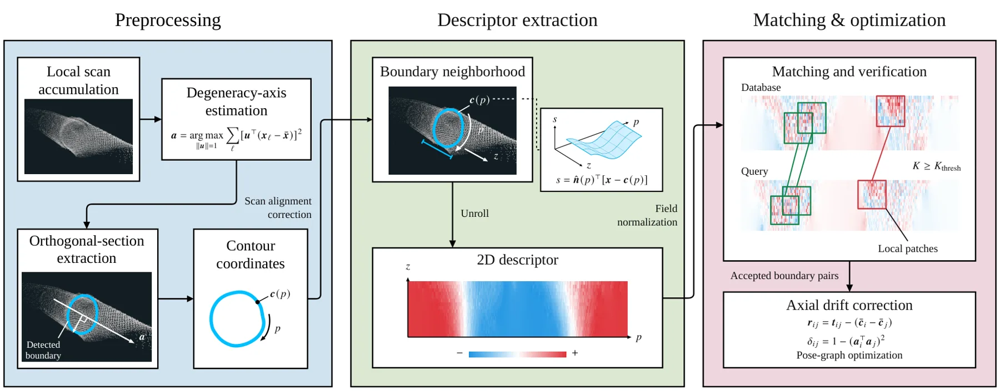
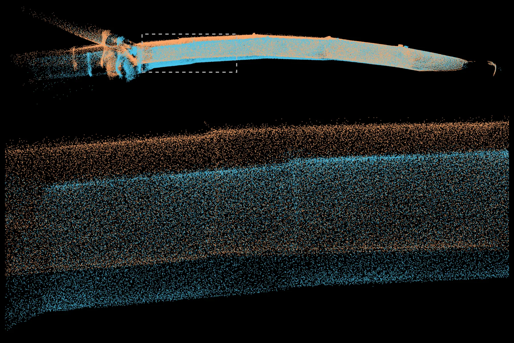

DeCOD：退化走廊里与退化方向正交的 LiDAR SLAM 几何约束
Degeneracy-Orthogonal Geometric Constraints for LiDAR SLAM
在轴向退化走廊里用与退化方向正交的横截面地标描述子 + 验证式写回约束纵向漂移；GEODE Shield 上 2.4 m 容差精度从 11.7% 提到 95.6%，Shield S10-Beta 位置 RMSE 132.817→4.206 m，自采管道端点误差最高降 99.9%。
precision
ATE
ATE
reduction
作者、单位与技术谱系 · Research context
作者与单位
研究脉络
- Scan Context / STD / Contour Context（LiDAR 位置识别）上游方向关系：这些全局描述子在轴向均匀走廊里产生近乎相同的签名、导致感知混叠，DeCOD 正是为补这一缺口而提出地标级匹配。[论文第 II-A 节]
- BIEVR-LIO / COIN-LIO 等退化感知里程计方法基座关系：退化感知前端通过抑制不可靠更新保持稳定，但不提供沿退化方向的新信息；DeCOD 把地标因子补在其之后。[论文第 II-B、IV-C 节]
- 环形展开（Daugman 虹膜识别 / Shape Context / LiDAR Iris）上游方法关系：DeCOD 的 (z,p) 环面展开与朝向不变匹配直接借鉴环形展开解决旋转对齐的思路。[论文第 II-C、III-A 节]
合作网络
- Sookmyung Women's University 内部合作署名Minseo Kim → Alex Junho Lee关系：共同署名（同单位，含通讯作者）[arXiv 首页署名]
- 对 BIEVR-LIO 与 COIN-LIO 的依赖关系DeCOD 地标因子 → BIEVR-LIO / COIN-LIO 前端关系：明确技术依赖[论文第 IV-A、IV-C 节]
作者与单位取自论文首页署名；脉络依据论文引用与自述；未发现公开代码声明，故不登记代码节点。
方法本质拆解 · What actually changed
是不是微调？
没有可训练网络：DeCOD 是纯几何算法，从累积子图中估计走廊轴、检测边界、拟合参考轮廓并构造描述子。唯一的“调参”是检测与验证阈值（DoG 尺度 2.5/10 cm、NMS 0.8 m、inlier 阈值 K≥9 或 15），几何验证与因子图优化都不是学习过程。
有没有额外约束？
额外先验包括重力方向（来自 IMU 或传感器轴）用于固定圆周参数化原点、走廊轴由 PCA 估计、以及横截面轮廓需 90% 投影点落在 0.18 m 内才接受；匹配时对 0°/180° 两种朝向、只用共同观测格，并拟合减去圆周/轴向偏置与倾斜。约束作用在因子图的截面位置与走廊轴对齐项上，绕轴旋转被显式放开。
推理/后端到底做了什么？
推理侧是检索 + 匹配 + 验证 + 优化：对每个查询边界与候选库做 9×33 描述子 patch 匹配，取互最近邻，用几何验证算共识分并只接受唯一最高分且 inlier 达阈值的候选；接受的 5-DoF 因子与里程计相对因子一起在位姿图上用 Levenberg–Marquardt 优化（Huber 1.345）。无接受因子时输出原轨迹。
方法本质是什么？
本质是把“沿退化轴的位移不可观测”转化为“可重识别离散地标的匹配问题”：地标是横截面边界，其描述子沿退化轴正交构造，匹配后给出的位置与轴向约束直接补上不可观测方向的信息。它改变的是退化方向上的信息缺口，靠验证保证不把错误关联写进图；它没有做的是在首次探索（尚无地标库）时消除漂移。
输入 LiDAR 子图与里程计轨迹，改变的位置是退化方向缺失的约束（新增横截面地标因子），合并动作为验证式关联 + 5-DoF 因子图优化，直接效果是纵向漂移被约束而绕轴旋转保持自由。

桥接价值Bridge
桥接价值
DeCOD 给的是一条我们在退化方向上很需要的证据链：在轴向均匀的走廊/管道里纵向不可观测导致漂移，单纯局部配准无法解决；它用“与退化方向正交的横截面地标”直接提供沿退化轴的位置约束。对我们而言，可迁移的是把不可观测方向的信息来源从“更强的局部配准”换成“可重识别的离散结构地标 + 验证后的因子”，并用精度而不是召回率来衡量这类写入是否安全。
方法与模块Method
方法摘要
分三步：① 提取截面边界并用符号法向偏差构建退化正交描述子——估计走廊轴 a 与重力对齐的横截面基 (e1,e2)，把局部点云按 (z,p) 展开成 16×256 图，记录沿外法向的偏移；② 不变匹配——对 0°/180° 两种相对朝向比较、只用共同观测格，并用最小二乘拟合减去圆周/轴向偏置与倾斜；③ 几何验证 + 优化——互最近邻 patch 匹配后用共识分 S=2K/(Ni+Nj) 与阈值 K_thresh 接受唯一最优候入选，生成 5-DoF 几何因子约束截面位置与走廊轴一致、但放开绕轴旋转。
可迁移模块
第一，“描述子沿退化轴正交构造”的思路——把观测投影到与不可观测方向垂直的子空间再做匹配，可直接借到我们约束弱方向的问题上。第二，verification-before-write：唯一 Top-1 候选且 inlier 数达阈值才写入因子图，未通过就拒绝（表 III 灰色行即零接受因子），这是“错误关联不得污染位姿图”的实现形态。第三，5-DoF 因子显式保留可观测自由度、只约束退化方向，避免引入虚假的绕轴旋转约束。

证据Evidence
关键证据与数字
GEODE Shield 1–10：加验证把 2.4 m 容差下 precision 从 11.7% 提到 95.6%（inliers≥15），同设置下 STD、BTC、HOTFLoc++ 的 precision 至多 5.8%；Tunneling 1–5 Gamma 上从 52.2% 提到 91.7%（0.3 m 下 75.0%）。轨迹校正（BIEVR-LIO 前端）：Shield S8-Beta 位置 RMSE 从 61.597 m 降到 0.768 m、S10-Beta 从 132.817 m 降到 4.206 m；但 S9-Beta 只从 94.902 m 降到 24.819 m（可靠地标不足）。自采管道数据端点误差：hume_01 13.342→0.013 m（99.9%）、pe_02 15.730→0.409 m（97.4%），最差 hume_03 只降 30.0%。
边界与下一步Limits & Next Step
边界与风险
评测全部在“回程重访”设定下（去程建库、回程查询），没有解决首次探索时的漂移；作者承认保守接受策略在严重漂移 + 地标不足时会限制校正（S9 即证据）。它是几何定位/建图方法，不含惯性或 GNSS 融合，也不报告不确定性量化。另一个风险是它对走廊轴与参考轮廓估计的依赖：轴由 PCA 估计、轮廓需 90% 投影点在 0.18 m 内才接受，几何退化或非均匀管径下这些前提可能失效。
下一步实验
第一，把 verification-before-write 做成最小对照：同一因子图上比较“直接写入 Top-1”与“过阈值才写入”，测 ATE 与假回环率。第二，复现 5-DoF 因子的自由度选择：分别放开/约束绕轴旋转，检查是否引入虚假约束。第三，测试证据边界——在低纹理/管径变化/无重力对齐下描述子是否还稳定，并画 precision–recall 与阈值 K 的敏感性；第四，评估把地标因子与 IMU/GNSS 因子联合时的收益。

